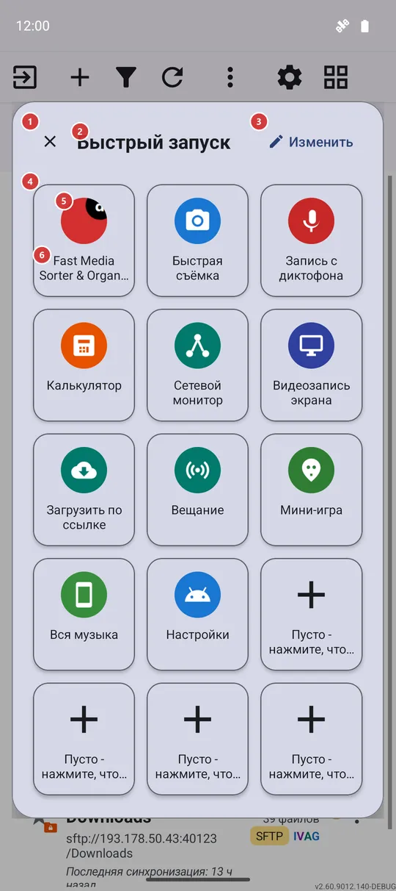
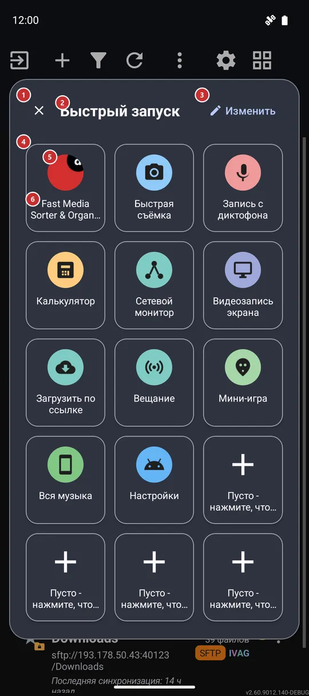

Быстрый запуск
Для чего этот экран
Быстрый запуск - это всплывающая сетка из пятнадцати плиток, которая открывается поверх того, чем вы заняты. Одно нажатие запускает приложение, инструмент FastMediaSorter, один из ваших ресурсов или экран настроек Android, и панель закрывается.


Порядок действий
- Откройте панель одним из трёх способов: плиткой быстрых настроек 7, жестом от края экрана 8 или через меню программ 9.
- Нажмите плитку 5, чтобы запустить то, на что она указывает. Панель закроется сама, и вы сразу окажетесь в выбранном приложении или на нужном экране.
- Приглушённая плитка с плюсом 6 - свободное место. Нажмите её, чтобы выбрать, что туда поставить.
- Нажмите «Изменить» 3, чтобы переставить плитки, заменить их или вернуть панель к стандартному набору.
- Нажмите «Закрыть» 1, коснитесь пространства вокруг панели или нажмите «Назад», чтобы убрать панель, ничего не запуская.
Элементы
Шапка панели
1ЗакрытьЗакрывает панель и возвращает вас к прежнему занятию.
Панель висит поверх приложения, которое было на экране, поэтому закрытие просто убирает её. То же делают касание вне панели и кнопка «Назад».
2Быстрый запускНазывает панель.
«Быстрый запуск» - так панель называется здесь, на плитке быстрых настроек и в меню программ, чтобы вы узнавали её, откуда бы ни открыли.
3ИзменитьОткрывает экран, где вы выбираете, что будет на панели.
Экран «Редактировать панель» позволяет занять свободное место, заменить плитку, переместить её, убрать или вернуть панель к стандартному набору. Изменения видны на панели сразу, когда вы возвращаетесь.
Сетка плиток
4Сетка плитокПятнадцать постоянных мест для ваших ярлыков.
В сетке всегда пятнадцать мест: три столбца в узком окне и пять в широком. Добавить места нельзя, но любое можно занять, заменить, переместить или освободить в экране «Редактировать панель».
При первом открытии панели приложение заполняет её само: сначала FastMediaSorter, затем его собственные инструменты, которые есть в вашей редакции, один из ваших ресурсов и настройки Android, а последние несколько мест остаются свободными для ваших приложений.
Плитки
5ПлиткаЗапускает приложение, инструмент, ресурс или экран настроек, который на ней показан.
Нажмите плитку, и панель запустит её цель, а затем закроется. Плитка может указывать на приложение Android, инструмент FastMediaSorter - например, калькулятор, мини-игру, «Потоки» или «Избранное», - на один из ваших ресурсов (он откроется в браузере файлов) или на экран настроек Android. Если инструмент выключен в настройках, плитка откроет соответствующую настройку, если она есть, вместо того, чтобы ничего не делать. Плитка Wi-Fi или Bluetooth сразу переключает связь в редакциях, где это возможно, а иначе открывает нужный экран Android. Если плитка указывает на удалённое приложение, ничего не откроется, а панель просто закроется.
6Пусто - нажмите, чтобы добавитьСвободное место, которое ждёт вашего ярлыка.
Место показано приглушённым, с плюсом. Нажатие не закрывает панель: оно открывает экран «Редактировать панель», где вы выбираете, что поставить на это место.
Как открыть панель
7Плитка быстрых настроекПлитка «Быстрый запуск» в быстрых настройках Android.
Потяните вниз быстрые настройки Android, нажмите в них кнопку редактирования и перетащите плитку «Быстрый запуск». Нажатие на плитку сворачивает шторку и открывает панель поверх приложения, которое было под ней. Она есть в каждой редакции на Android 7 и новее, так что работает и там, где жесты от края экрана не предлагаются.
8Жест от края экранаСвайп от края экрана открывает панель.
В настройках жестов края экрана назначьте одному направлению свайпа действие «Открыть панель быстрого доступа». Жесты края требуют включённой накладки жестов в настройках и предлагаются в редакциях Standard и noLegal; в них свайп вверх в верхней левой полосе уже назначен на открытие панели при первом запуске. Панель появляется поверх текущего приложения без снимка экрана и без лишних запросов.
9Меню программПункт «Быстрый запуск» среди программ списка ресурсов.
В списке ресурсов «Быстрый запуск» всегда есть в списке программ - выключателя для него нет. Список находится на панели программ или, когда она выключена, в меню «Ещё». Выбор этого пункта открывает панель.